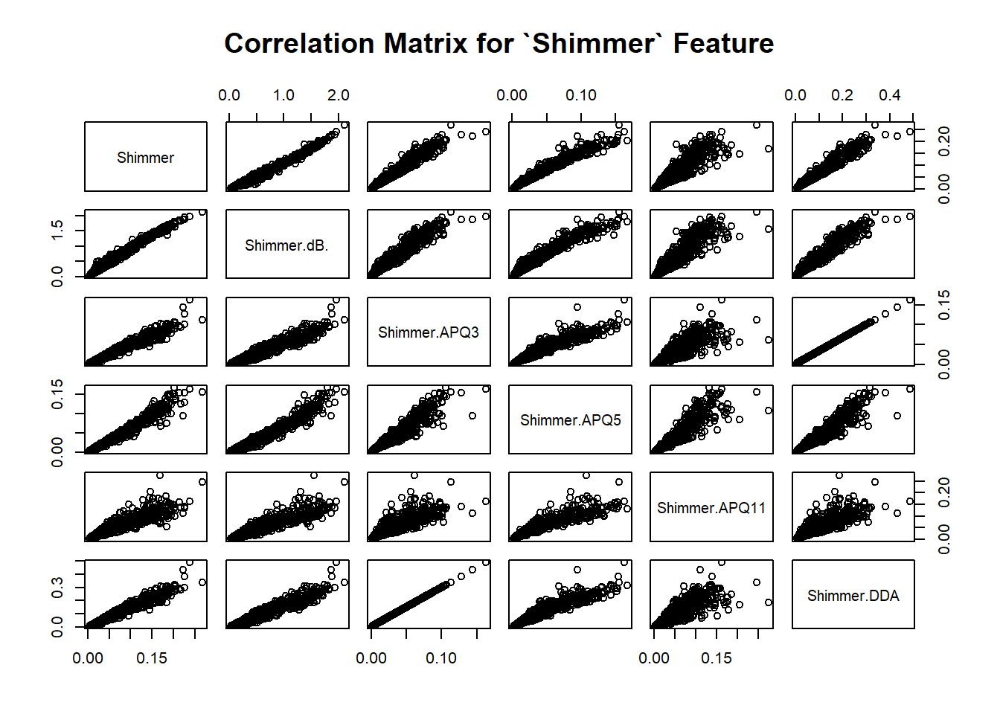

Exploratory Analysis
Introduction
This exploratory analysis will primarily use density curves, boxplots and scatter plots to highlight aspects of centrality, variance, and correlations between the various features of our dataset. Before beginning our exploratory analysis we will code sex as a factor, as many of our visualizaitons will compare the difference between men and women.
#Code Sex as a Factor
dataExploratory$sex = factor(dataExploratory$sex)Variance Analysis
In our prediction model we are focusing on the response motor_UPDRS for that reason we will begin by visualizing the distribution of this metric. The below plot is helpful in understanding variance within this metric. Many issues with prediction and inference can arise when variance of a feature is not properly understood.
The above figure shows the density curve for motor UPDRS score as it relates the gender. The red curve represents males and the blue curve represents females. At a glance we can see that males appear to have less variability in their motor scores than females. This is confirmed below when we calculate the variance of each group.
#Variance of Motor Score for Men
var(dataExploratory$motor_UPDRS[which(dataExploratory$sex==0)])## [1] 62.27828#Variance of Motor Score for Women
var(dataExploratory$motor_UPDRS[which(dataExploratory$sex==1)])## [1] 74.09297It can also be noted that, by group, the motor score is multimodal, meaning measures of centrality (mean, median, mode) must be considered with caution. Interestingly, the density plot for total UPDRS score does not yield the same result. If we look at the plot below, it appears that women have less variability in their total UPDRS scores.
This observation is confirmed when we calculate the variance for each group
#Variance of Total Score, Male
var(dataExploratory$total_UPDRS[which(dataExploratory$sex==0)])## [1] 121.099#Variance of Total Score, Female
var(dataExploratory$total_UPDRS[which(dataExploratory$sex==1)])## [1] 97.018In conclusion, Men have less variability in motor UPDRS scores, whereas women have less variability in total UPDRS score. Whether or not these differences in variability are significant would require an F-Test on the ratio of variance for each group.
Box Plots
Now we will use boxplots to get another perspective on the relationship between gender and motor/total UPDRS scores.

The differing variability of total score between men and women is still clear from the differing IQR’s shown in the boxplots. However, we are unable to capture the multimodality of the data which can be a potential shortcoming of boxplots. One added benefit of these plots is that we can get a feel for any outliers. It does not appear from these plots that our data has any outlying observations.
Correlations/Associations
Between motor and total score.
We will now look at the assocation between motor and total UPDRS score. This is visualized below in the scatter plot.
Higher motor scores tend to be associated with higher total scores. Another interesting take away from this plot is that there does not appear to be any clear indication that one gender has higher scores than the other.
Age and Score
We can see that there does not appear to be a clear assocation between age and scores based on this scatter plot.
Jitter Metrics
Shimmer Metrics

Remaining Voice Metrics
Conclusion
The above correlation matrices indicate that there may be associations between the Jitter metrics (i.e. Abs., PPQ5,…) as well as Shimmer metrics. This can lead to multicollinearity in our final model. Therefore dimension reduction methods such as principal component analysis or shrinkage models are likely appropriate for further analysis.